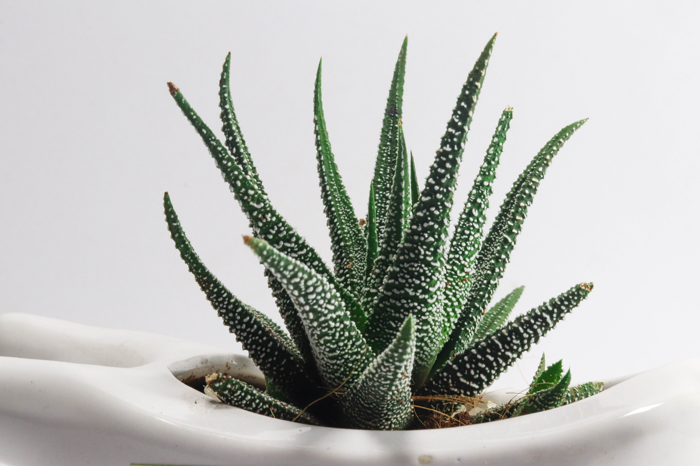

Small gardens have a lot more potential than you realize. Whether dealing with a long narrow space behind a vintage home, a cramped backyard that lacks privacy, or a shabby garden at the rear of a brownstone the possibilities are endless. So don’t write off your 40-foot by 20-foot outdoor area just yet—with the right design, it could be an incredible garden
Aeonium are very resistant to drought, so it is not necessary to water them with too much...
Very decorative succulents. They are related to Aloe, although they differ in their flowers...
Sempervivum are known for their resilience and ability to spread...